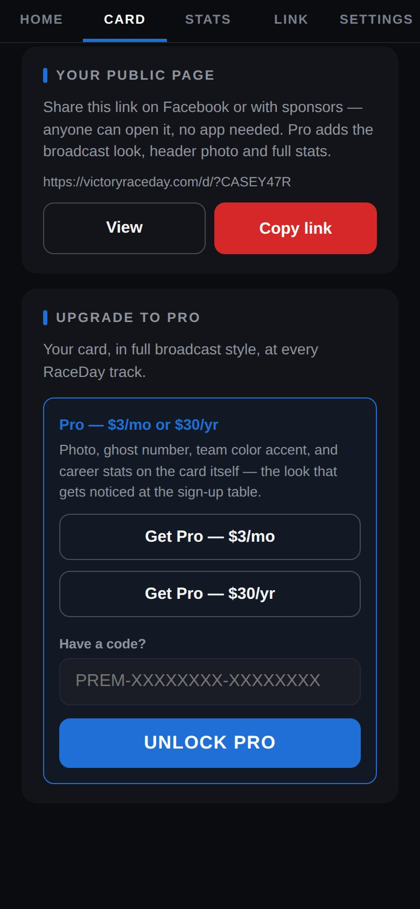
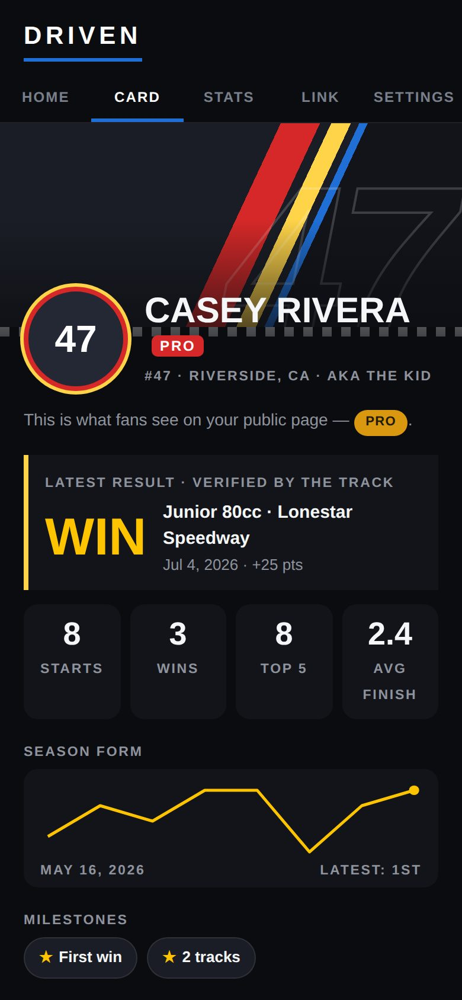
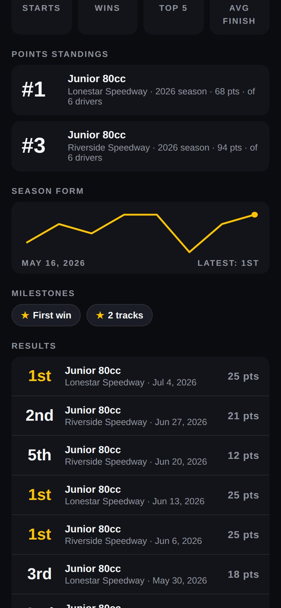
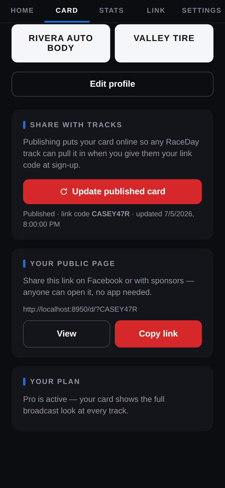

-
Find Upgrade to Pro
On the Card tab, scroll to Upgrade to Pro.

Upgrade to Pro -
Pick monthly or yearly
Tap Get Pro — $3/mo or Get Pro — $30/yr. Checkout opens through Stripe (Driven publishes your card first if needed). When you come back, Driven shows Pro is active.
-
What changes
Your card gets the PRO badge, a header photo option, three team colors, a season form chart and milestone badges.

A Pro card -
On your public page
Pro pages also show your points standings at each track, season form and milestones.

Points standings -
Have a code?
Under Upgrade to Pro, paste it into Have a code? and tap Unlock Pro.
-
Manage or cancel
Your plan on the Card tab shows your renewal date and Manage subscription, where you can cancel any time.

Your plan
Good to know
- If Pro ends, your card goes back to the standard look — results, stats and your page all stay.
- Pro belongs to your profile, not your phone — and covers every ride on your account.
- Race more than one kind of car? Add a ride for each in Settings → Rides (up to 3 with Pro).
Next guides
Still stuck? The Driver FAQ covers common questions, and the Field Manual walks through every Driven screen. Or just text me — it's the fastest way to get an answer.
💬 Text Josh · (260) 207-4983 →or email